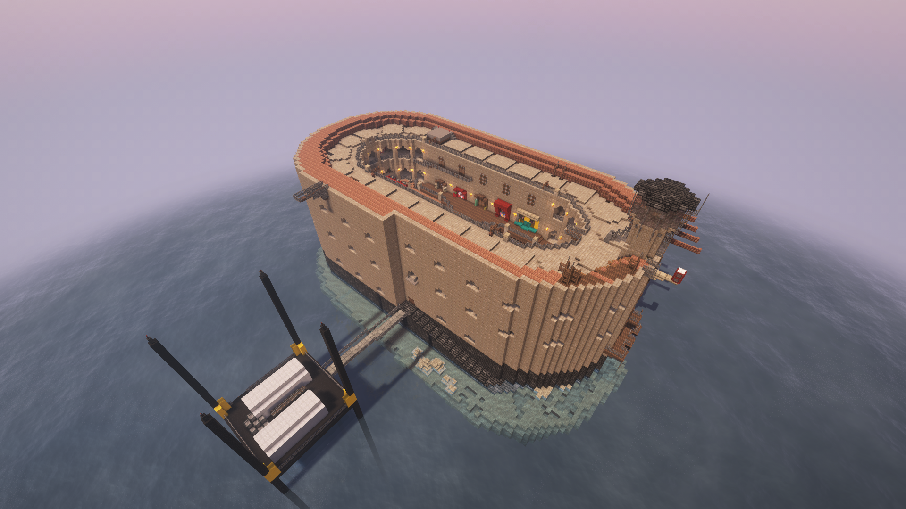
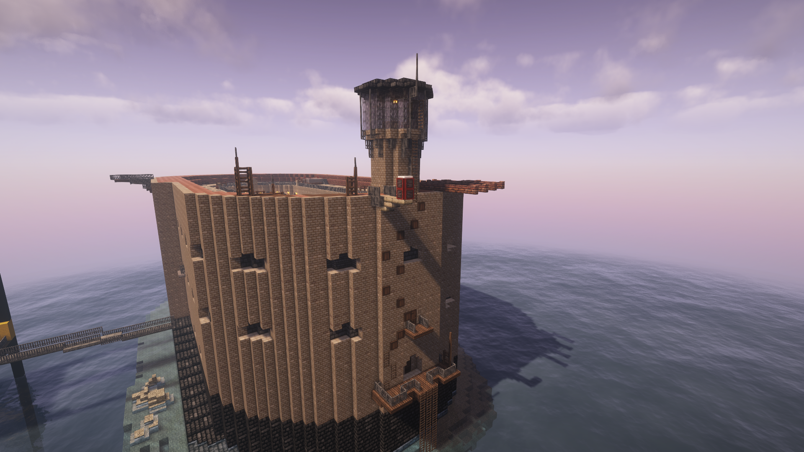
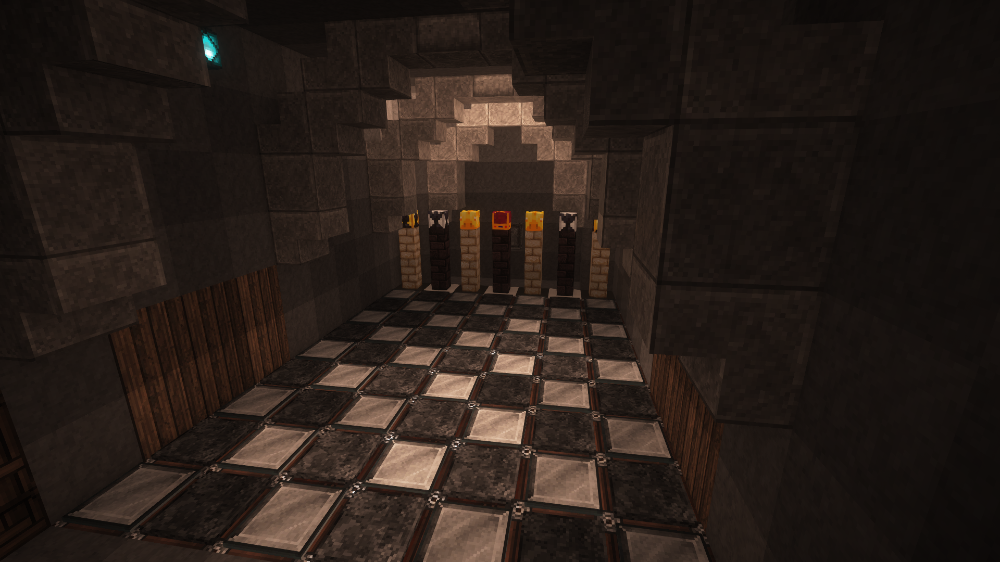
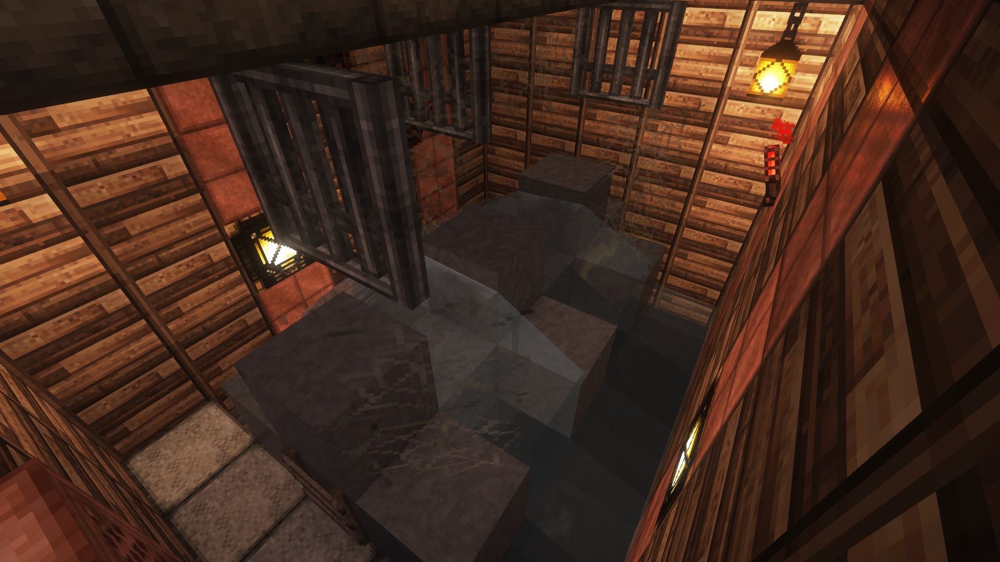
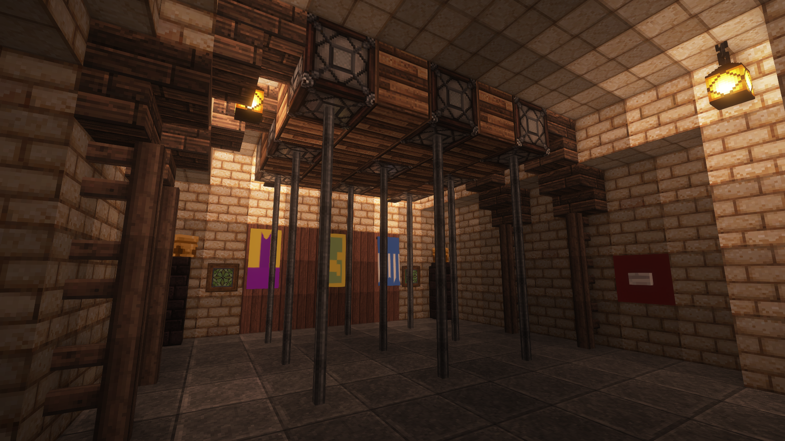

Vue du dessus

Pour démarrer L'aventure , les candidats vont devoir escalader la façade du fort , intégrer la vigie et répondre à l'énigme du Père Fouras pour pouvoir ouvrir la porte principale et démarrer la quête des clés !

Une nouvelle épreuve inspiré de la cellule interactive (2011 jusqu'à 2013) et du jeu du Chemin (2011 jusqu'à 2013).
Le candidat va devoir retenir le chemin illuminé au sol pour pouvoir arriver jusqu'au roi et obtenir la clé 🔑.

Une nouvelle épreuve est une adaptation des cylindres (1993 jusqu'à 2017) , Le candidat va devoir progresser à travers la colonne d'engrenages pour pouvoir arriver au bout et obtenir la clé 🔑.

Une nouvelle épreuve est une adaptation de l'épreuves des perches (2005 jusqu'à 2014) ,La seule épreuve du fort à ce jouer à trois candidats , il faut trouver les 3 cases qui s'allument sur le damier au plafond et y rester simultanément avec les trois candidats pendant 3 secondes. Une fois ceci effectuer ils obtiennent la clé 🔑.
Présentation de FBM
Bonjour à tous et à toutes
et bienvenue sur le site du Projet Fort Boyard Minecraft Vanilla ! Un Serveur dédié à des émissions Fort Boyard sur minecraft sans mods pour offrir une expérience de jeu optimal et accessible à tout les joueurs. Un fort Boyard Amélioré Chaque Année et des techniques uniques adapté au serveur Vanilla , mais aussi une passion transmise dans sa construction mais aussi dans les tournages avec les différents joueurs !
Tentez L'aventure Fort Boyard Minecraft Dès Maintenant !